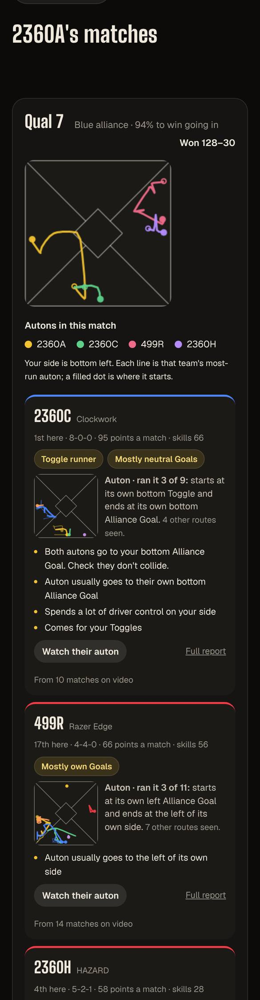
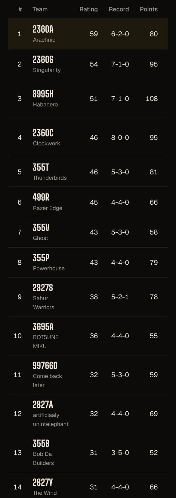
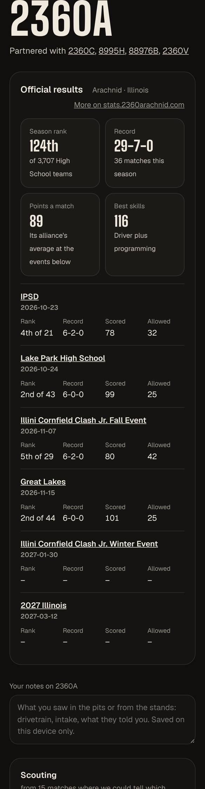
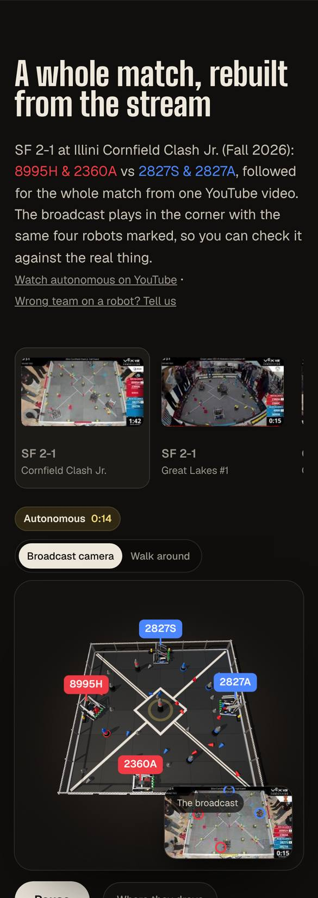
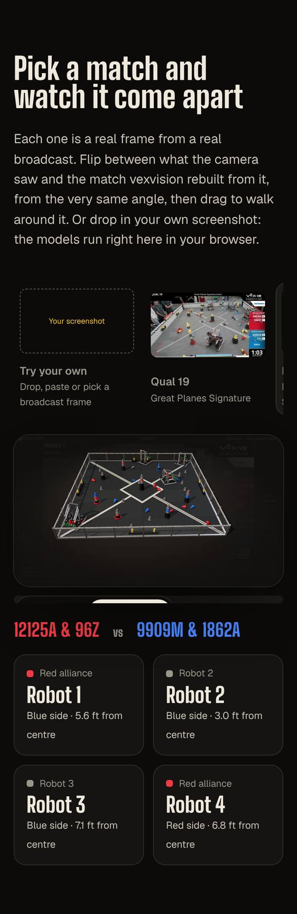

The site again, area by area, with each one built two or three ways so you can pick. Option A is always the site as it is now. The pictures are a phone at 390 px wide, because that's where the repeats showed up. Every option was also checked on a computer screen.
Decided Nov 26: phones (screens up to 640 px wide) now use the option marked "Phones use this" in every area. Laptops keep the original layout (A) until those are chosen too.
To try one, press its button: the live site opens with that option on. A yellow "Layout options" button in the bottom-left corner switches any area between A, B and C, and you can mix options from different areas. Nothing changes for anyone else until you choose.
Event prep: your matches
What's wrong now. On a phone this section is about 19,000 pixels tall for 10 matches. A team you meet twice gets the same full card twice (499R appears in Qual 7 and Qual 13), every card says its auton twice (once in the auton line, again as "Auton usually goes to…"), and the "Your side is bottom left" caption repeats under every field picture.
A
As it is Laptops use this

Every match shows the field picture and a full card for each of the other three teams.
Good
Nothing to learn, and everything is on screen without tapping.
Cost
The same team's card repeats every time you meet it, and the page is very long on a phone.
Each match is short: the field picture and one line per team (record, main habit, where its auton goes, and any auton clash with you). Below that, "Who you'll meet" shows each partner and opponent's full card once, with links back to the matches you play them in.
Good
Nothing is said twice. Good for studying the whole schedule the night before, and it prints well.
Cost
Still long, because the cards are now in one list at the bottom, and you tap "Card" to jump down to a team.
On a phone
about 19,000 px: about as long as A, but nothing repeats
Your matches become tabs. It opens on your next match and shows only that one: field picture and the three cards, with an auton clash note on the card it applies to. Back and On buttons step through the schedule.
Good
Best for checking between matches at the event: about a quarter of the length, and the next match is what you see first. Printing still prints every match.
Cost
To compare two matches you switch tabs, and a team's card shows again when you open a later match with them.
Chosen for phones: C. At an event you check one match at a time on a phone, and C opens on the next one. If you mainly study the schedule before the event, B is the better choice. Laptops keep A for now.
Event prep: pick list
What's wrong now. The pick list is a 9-column table. On a phone it scrolls sideways, so you can't see a team's name, rating and the Mark picked button together while alliance selection is moving fast.
A
As it is Laptops use this

A table with every number in its own column.
Good
Easy to compare a column of numbers on a computer.
On phones each team is one short row: rank, team, rating and Mark picked. Tap a row to open its record, points, skills, tags and fit. Computers keep the table.
Good
The whole list fits in a few screens, so you can see the best teams left and mark picks quickly.
Chosen for phones: C. During alliance selection the job is to find the best team left and mark picks fast. Short rows do that and keep the details one tap away. Laptops keep A for now.
Team page and report
What's wrong now. Yesterday's rework split this into a short team page and a full report. Moving between two pages still means two loads and two headers, and the report is long on a phone.
A
Overview + report Laptops use this

The team page has official results, a short scouting card and the match list. "Full scouting report" opens a second page with the detail.
Good
Already live, and the team page is quick to read.
Cost
Two pages. To see the detail you leave the team page.
One page. Under the team's tags and "watch for" lines, each section is one row with its key fact ("Route A in 7 of 12 matches", "22% of it on the other side", "Faster than 76% of robots"). Tap a row to open the detail in place.
Good
The closed page is the overview, and nothing is repeated. Each row's key fact answers most questions without opening it.
Chosen for phones: C. The headings already give the key facts, so the page works as an overview and a full report at once. Fold-out sections also tend to work better than tabs on a small screen (see sources). Laptops keep A for now.
Replay picker
What's wrong now. All 901 replays sit in one sideways strip with no way to search, so finding one team's match means swiping a long way.
A
As it is Laptops use this

One sideways strip of every replay, best-read first.
A team-number box and an event list. It shows the 12 best-read matches until you type, then only that team's matches, with the alliances written on each one. Show more loads more.
Chosen for phones: B. With 901 replays, finding a match needs a search. Laptops keep A for now.
Read a frame
What's wrong now. The home page shows a rebuilt field three times (the top, the replay and this section). This section's robot boxes are confusing: "Red alliance" over "Blue side" (the alliance, then the half of the field it is on), and "Robot 2" twice when the team isn't known.
A
As it is Laptops use this

Frame list, the picture and four robot boxes.
Good
Unchanged.
Cost
Repeats the idea of the two sections above, and the robot boxes read badly.
Chosen for phones: C. The replay above already shows what vexvision does. If you choose C, B's plainer robot list can go inside it too. Laptops keep A for now.
Event list
What's wrong now. The event dropdown mixes 29 events by date, with "no schedule yet" written on 13 of them.
A
As it is Laptops use this
One list, newest date first, "no schedule yet" after future events.
Good
Unchanged.
Cost
Past and future events are mixed, and the label repeats.